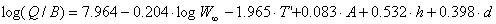
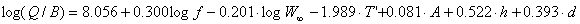
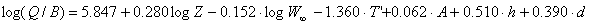
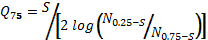

There are various approaches for obtaining estimates of the consumption/ biomass ratio (Q/B). They may be split into (i) analytical methods and (ii) holistic methods:
(i) The analytical methods involve estimation of ration, pertaining to one or several size/age classes, and their subsequent extrapolation to a wide range of size/age classes, representing an age-structured population exposed to a constant or variable mortality;
The required estimates of ration are obtained from laboratory experiments, from studies of the dynamics of stomach contents in nature (Jarre et al., 1991c), or by combining laboratory and field data (Pauly, 1986).
(ii) The existing methods for estimation of Q/B are empirical regressions for prediction of Q/B from some easy-to-quantify characteristics of the animals for which the Q/B values are required.
Palomares and Pauly (1989; 1998) described based on a data set of relative food-consumption estimates (Q/B, per year) of marine and freshwater population (n=108 populations, 38 species) a predictive model for Q/B using asymptotic weight, habitat temperature, a morphological variable and food type as independent variables. Salinity was not found to effect Q/B in fish well adapted to fresh or saltwater (other things being equal). In contrast the total mortality (Z, per year) showed a strong, positive effect on Q/B and also on the gross food-conversion efficiency (defined by GE = Z/ (Q/B)), by affecting the ratio of small to large fish.
The authors present three related models (see Ecoempire for implementation in EwE):

Eq. 17(R²=0.53, 98 df), where, W∞ is the asymptotic weight (g), T’ is an expression for the mean annual temperature of the water body, expressed using T’ = 1000/Kelvin (Kelvin = °C + 273.15), A is the aspect ratio (see Figure 2.1), h is a dummy variable expressing food type (1 for herbivores, and 0 for detritivores and carnivores), and d is a dummy variable also expressing food type (1 for detritivores, and 0 for herbivores and carnivores)
The equation was modified to investigate the effect on mortality on Q/B, and to derive predictive models of Q/B taking explicit account of different mortalities, values of Q/B were calculated using the equation above for mortalities corresponding to f · M, where f is a multiplicative factor with value of 0.5, 1, 2 or 4, and M is the natural mortality rate that is estimated from Pauly’s (1980) empirical relationship, (included in the Ecoempire relationships).

Eq. 18(R²=0.52, 102 df), where f is the multiplicative factor introduces above, and the rest of the variables are as defined earlier. Note that in Palomares and Pauly (1998) Equation 12, the sign for the T’ factor was reversed by mistake.
For cases where an estimate of total mortality, Z, (per year) is available the following relation may be used:

Eq. 19The models presented here updates the models derived from 33 empirical estimates of the consumption/biomass ratio (Q/B) for marine fishes, and published by the same authors in 1989.
This relationship can be used only for fish groups that use their caudal fin as the (main) organ of propulsion.

Figure 2.1. Schematic representation of method to estimate the aspect ratio (Ar = h2/s) of the caudal fin of fish, given height (h) and surface area (s, in black).